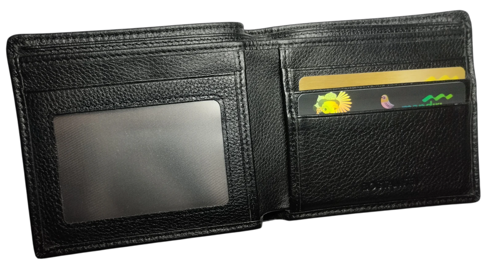
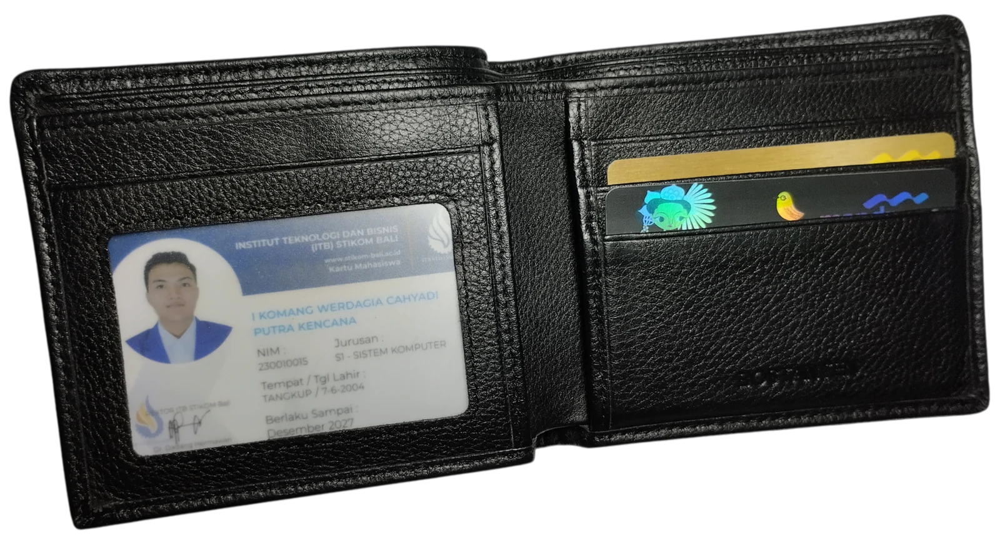
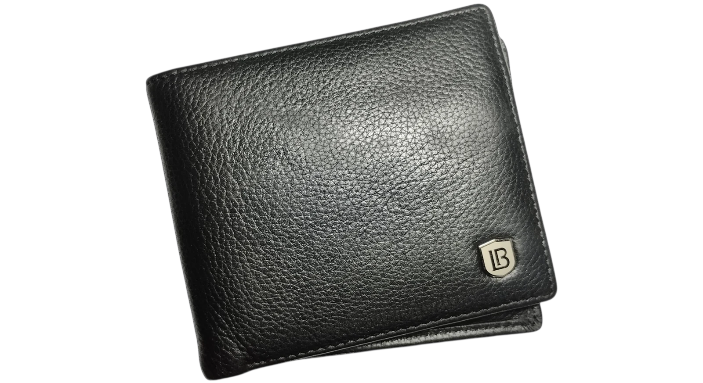
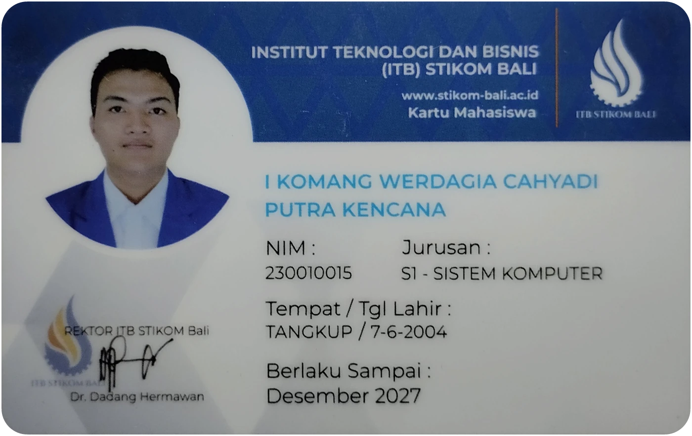
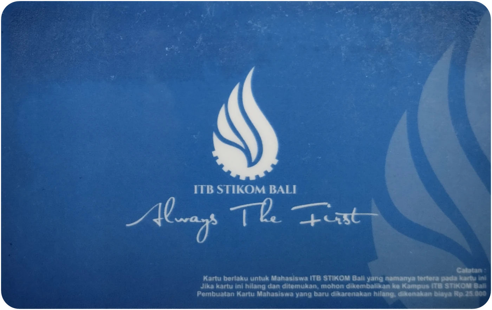

Profil Mahasiswa
Mahasiswa S1 Sistem Komputer di Institut Teknologi dan Bisnis (ITB) STIKOM Bali.
I Komang Werdagia Cahyadi Putra Kencana





KlikKetuk dompet untuk membukanya
Profil Mahasiswa
Mahasiswa S1 Sistem Komputer di Institut Teknologi dan Bisnis (ITB) STIKOM Bali.





KlikKetuk dompet untuk membukanya
Kartu Mahasiswa